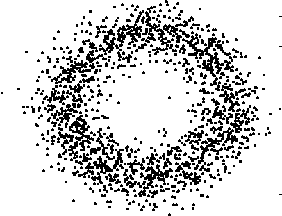
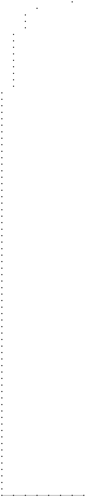
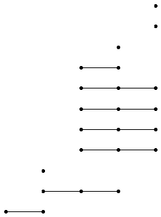
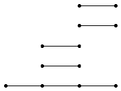

|
|||
|---|---|---|---|
| 1. Persistent Homology of Pure Cubical
Complexes |
|||
| An
inclusion of pure cubical complexes X1 --> X2
induces a natural homology homomorphism Hn(X1,F)
--> Hn(X2,F) for each positive n and any
coefficient module F. Taking F to be a field, the induced homomorphism
is a homomorphism of vector spaces and is completely determined by its
rank R1,2. A sequence of inclusions X1 --> X2 --> X3 --> ... --> Xk induces a sequence of homology homomorphisms which, in each degree n, determine a kxk matrix of ranks Ri,j (where for i>j we define Ri,j=0). This matrix is referred to as the n-th persistence matrix, over the field F, for the sequence of pure cubical complexes. A possible scenario is that X1 is a sample from an unknown manifold M, and that each space Xi+1 is obtained by thickening Xi in some fashion. The hope is that the persistence matrices describe the shape of the manifold M from which X1 was sampled. |
|||
| Persistence
matrices are particularly useful when analysing high-dimensional data
since the shape of such data is hard to visualize. However, as a toy
example let us consider the
2-dimensional data cloud 
which, as we can see, was sampled from an annulus. The following computations agree with this observation. The following commands produce a sequence of thickenings for this data cloud and then compute the degree 1 persistence matrix over the field of two elements. |
|||
| gap>
M:=ReadImageAsPureCubicalComplex("datacloud.eps",300); Pure cubical complex of dimension 2. gap> T:=[];; gap> for i in [1..10] do > for k in [1..5] do > M:=ThickenedPureCubicalComplex(M); > od; > Add(T,M); > od; gap> R:=PersistentHomologyOfPureCubicalComplex(T,1,2);; |
|||
| The
persistence matrix R can be viewed as a barcode. The following command
displays this barcode. The single horizontal line at the bottom of the
barcode corresponds to a single persistent 1-dimensional homology. This
is consistent with the data having been sampled from an annulus - a
space with a single 1-dimensional hole. The various dots in the barcode
correspond to homologies that arise briefly at various stages in the
thickening process. |
|||
| gap>
BarCodeDisplay(R); 
|
|||
| 2. Persistent Homology of Groups |
|||
| Any
sequence of group homomorphisms G1 --> G2
--> ... --> Gk induces a sequence of homology
homomorphisms. In particular, the successive quotients of a group G by
the terms of its upper central series give a sequence of group
homomorphisms that induces an interesting sequence of homology
homomorphisms. For a finite p-group we take homology coefficients in the field of p elements. The following commands compute and display the degree 3 homology barcode for the Sylow 2-subgroup of the Mathieu group M12. |
|||
| gap>
G:=SylowSubgroup(MathieuGroup(12),2);; gap> IdGroup(G); [ 64, 134 ] gap> P:=UniversalBarCode("UpperCentralSeries",64,134,3);; gap> BarCodeDisplay(P); 
|
|||
| 3. Persistent Homology of Filtered Chain
Complexes |
|||
| The
Lyndon-Hochschild-Serre spectral sequence in group homology describes
the homology of a group G in terms of the homology of a normal subgroup
N and the homology of the quotient G/N. The spectral sequence arises
from a filtered chain complex. Barcodes can be used to represent the
differentials in this spectral sequence. For example, the following commands produce the degree 2 mod 2 homology LHS barcode for G the diherdal group of order 64 and N its centre. |
|||
| gap>
G:=DihedralGroup(64);; gap> N:=Center(G);; gap> R:=ResolutionNormalSeries([G,N],3);; gap> C:=FilteredTensorWithIntegersModP(R,2);; gap> P:=PersistentHomologyOfFilteredChainComplex(C,2,2);; gap> BarCodeDisplay(P); 
|
|||
|